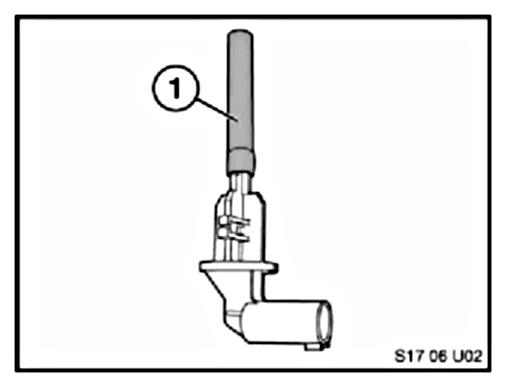

Cooling System - Coolant Level Sensor Information
SI B 17 04 06Cooling Systems
November 2006
Technical Service
SUBJECT
Coolant Level Sensor Replacement Information
MODEL
All E39 (M5), E46, E52, E53, E60, E61, E63, E64, E65, E66, E70, E83, E85, E86, E90, E91, E92 models produced from 06/1998 equipped with a coolant level switch
SITUATION
The coolant sensor in these models incorporates a black plastic tube covering the switch components. This switch was designed with this plastic tube to achieve optimal functionality and it must NOT be removed during assembly.

Coolant Sensor - Part Number 17 13 7 524 812
1. Black plastic tube
WARRANTY
Information Only

Disclaimer